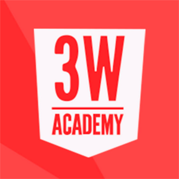
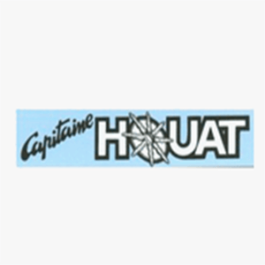
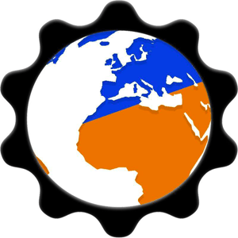
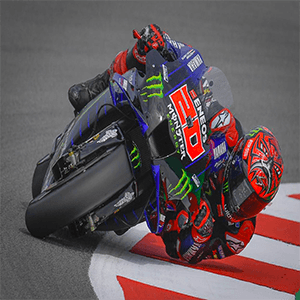
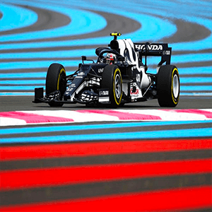

Je suis LECOMPTE Quentin, j'ai 21 ans, sur ce site vous allez en apprendre plus sur moi même, ma vie en générale, ce que j'aime, ma vie professionelle, ma vie d'étude, afin de faire votre propre opinion.
Mon expérience profesionnelle

Formation Simplon Développeur web
Je suis actuellement une formation en développeur web. La fin de la formation est prévu pour mars 2022.
J'ai effectué 3 mois de BootCamp en distancielle.
J'ai appris le langage HTML, CSS que je maitrise, également JS, PHP ou j'ai apperçu ce langage. Je maitrises également, BootStrap, Wordpress, GitHub.
Opérateur de commande pendant plus d'un an et demi :
- De novembre 2019 à février 2021
- De juillet 2019 à aout 2019
- De juillet 2018 à aout 2018
1 semaine de test (technique et physique)
Afin de déployer le systéme informatique sur les bases des opérations exterieurs (OPEX) au mois de novembre à Nancy.
L'association Q&DInformatique
Je suis vice-président de l'association Q&DInformatique. Créer en 2017, nous avons pour but d'apporter notre savoir faire en informatique en vers les personnes qui se trouve en difficulté.
Voici le lien vers notre page Facebook : Q&DInformatique
Mon niveau d'étude
L1 Informatique
J'ai éffectué 2 mois en univerité à Calais.
Titulaire d'un Baccalauréat Scientifique
Obtenu le BAC S en 2019.
Présentation de la Ninja 650
Voici ma moto, fan de moto depuis mon plus jeune âge, j'ai eu la chance de pouvoir m'offrir ce genre de bolide !
C'est une Kawazaki Ninja 650 de 2020, c'est un moteur 2 temps, bridé en permis A2 jusqu'en aout 2022.
Le sport
Fan de moto, je suis également la moto GP, elle permet de montrer quel pilote et quelle écurie est la meilleur au monde via ces circuits qui nous permettent nous spectateur de voyager avec eux. Pourquoi Fabio ? Car c'est un jeune pilote français et qui possède devant lui une carrière très prometteuse.
Si vous connnaisez ce genre de véhicule, pas besoins d'aller plus loin, c'est évidemment une Formule 1 de cette année, ce véhicule est conduit par GASLY Pierre, le dernier pilote français à avoir remporter un grand-prix de Formule 1. Egalement si cette photo et ce paragraphe ce trouve ici c'est que j'aime ce sport automobile, je le suis et j'attends chaque grand-prix avec impatience.